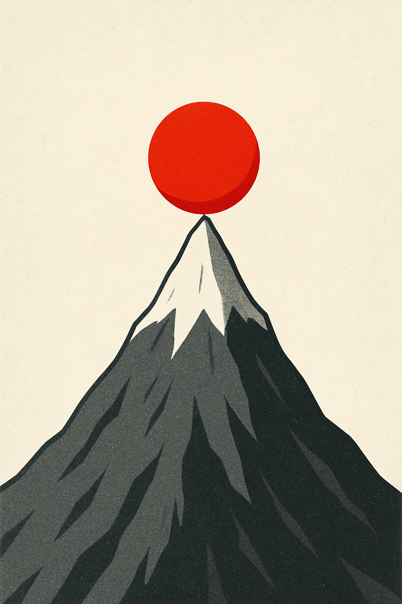

POLS 3220: How to Predict the Future
Let’s motivate today’s topic with a little game (Kuran 1991).
This is the situation. It’s late in the semester. Everyone’s a bit tired of learning.
But here’s Professor Ornstein, lecturing on another topic he expects you to learn before the final exam.
It probably even has math!
Enough already!
I mean, the man’s Brier Score puts him in 20th place! Who does he think he is, lecturing us about prediction?
He couldn’t predict his way out of a paper bag.
It’s time for drastic action. Take a few minutes to brainstorm protest slogans with your table.
Of course, protesting in the middle of class is risky.
If too few people protest, it will be easy to single them out for retribution.
Much safer to protest if other students are protesting too.
Take a minute to consider how much risk you’re willing to take on.
How many other students need to be actively protesting before you stand up and protest as well?
This number is called your “revolutionary threshold”.
Secretly write down your revolutionary threshold. It should be a number between 0 and 10.
Once everyone has finished writing down their number, we’ll begin.
This game helps illustrate the concept of tipping points.
A tipping point is when a small change in conditions yields a large change in outcomes.
For example, a classroom where everyone has a revolutionary threshold of 1 will be completely peaceful, despite their simmering rage.
It only takes one person getting slightly angrier to create a revolt that sweeps the entire classroom.

Tipping points make prediction extremely difficult, because you must have very precise knowledge about conditions.
Protests and revolutions are a great example of this.
Many experts now claim that the collapse of Eastern European communist regimes in 1989 was “inevitable”. But absolutely no one predicted it at the time (Kuran 1991).
Large social movements and uprisings almost always catch people by surprise — even their organizers!
This is a particularly true in autocratic/repressive societies, where there is widespread preference falsification. People are hesitant to openly voice their dissatisfaction unless other people are doing so.
Tipping points are often found in systems with positive feedback.
In the presence of positive feedback loops, a small nudge can start a self-reinforcing cycle.
Discussion Question: What are some other examples of phenomena with positive feedback, where we might observe tipping points?
Anything that spreads from person to person—ideas, diseases, fashions—is likely to exhibit tipping behavior.
Consider a basic stock-and-flow model from infectious disease epidemiology, the SIR Model.
There are three stocks:
people who are Susceptible to the disease (S),
people who are Infectious (I),
and people who have Recovered from the disease (R)
Each time a Susceptible person comes into contact with an Infectious person, there is some probability \(t\), the transmission probability, that the disease will spread.
Each day, there is some probability \(r\), the recovery probability, that an Infected individual will become Recovered.
Define the basic reproduction number as:
\[ R_0 = \frac{t}{r} \]
The tipping point is at \(R_0 = 1\).
When \(R_0 < 1\), the epidemic fizzles out. People recover faster than they can transmit to other people.
When \(R_0 > 1\), the epidemic spreads exponentially. Each person transmits the disease to at least one person on average before they recover.
If you’re close to the tipping point, then very small changes in \(t\) can produce wildly different outcomes.
In the presence of positive feedback, a system can “tip” rapidly in response to small changes in conditions.
This makes prediction exceedingly difficult, because you need to have precise information about which side of the tipping point you’re on.
And it suggests that there are critical points in time when small differences in initial conditions can cause history to unfold in dramatically different ways.
More on that next time!